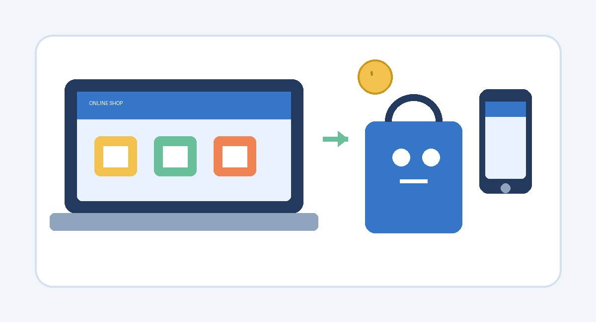

أولاً: المقدمة
أصبحت التجارة الإلكترونية من أهم مظاهر التطور التكنولوجي في العصر الحديث، حيث تتيح للأفراد والشركات شراء السلع والخدمات وبيعها عبر الإنترنت. وقد ساعد انتشار الهواتف الذكية ووسائل الدفع الإلكتروني على زيادة الاعتماد عليها في الحياة اليومية.
ثانياً: عرض الموضوع
مفهوم التجارة الإلكترونية
التجارة الإلكترونية هي تنفيذ عمليات البيع والشراء وتبادل المنتجات والخدمات والمعلومات باستخدام الإنترنت والمنصات الرقمية. وتشمل المتاجر الإلكترونية وتطبيقات التسوق وبعض الخدمات التي تُقدَّم وتُدفع إلكترونياً.

أهمية التجارة الإلكترونية
تساعد التجارة الإلكترونية على الوصول إلى عدد أكبر من العملاء، وتسهيل مقارنة الأسعار، وتوفير الوقت والجهد. كما تمنح الشركات الصغيرة فرصة لعرض منتجاتها لعملاء خارج نطاقها الجغرافي.
مميزات التجارة الإلكترونية
- إمكانية التسوق في أوقات مختلفة ومن أماكن متعددة.
- سهولة البحث عن المنتجات ومقارنة الأسعار.
- تقليل بعض تكاليف تشغيل المتاجر التقليدية.
- الوصول إلى أسواق وعملاء جدد.
التحديات والعيوب
من أبرز التحديات حماية البيانات الشخصية وبيانات الدفع، واحتمال التعرض للاحتيال، وعدم قدرة العميل على فحص المنتج بنفسه قبل الشراء. وقد تحدث أيضاً مشكلات في الشحن أو تأخير وصول الطلبات؛ لذلك من المهم الشراء من مواقع موثوقة وقراءة سياسة الاسترجاع.
مقارنة بين التجارة التقليدية والتجارة الإلكترونية
| وجه المقارنة | التجارة التقليدية | التجارة الإلكترونية |
|---|---|---|
| مكان الشراء | متجر أو سوق فعلي | موقع أو تطبيق عبر الإنترنت |
| وقت التسوق | وفق مواعيد فتح المتجر | غالباً متاحة طوال اليوم |
| فحص المنتج | يمكن فحصه مباشرة | يعتمد على الصور والوصف والتقييمات |
| استلام المشتريات | غالباً فور الشراء | قد يتطلب الشحن والانتظار |
نصائح للتسوق الإلكتروني الآمن
يُنصح باستخدام المواقع المعروفة، والتأكد من عنوان الموقع، وعدم مشاركة كلمات المرور أو رموز التحقق، واختيار وسيلة دفع مناسبة، والاحتفاظ بتفاصيل الطلب والإيصال.
ثالثاً: الخاتمة
في النهاية، أصبحت التجارة الإلكترونية وسيلة مهمة لتسهيل عمليات البيع والشراء ودعم نمو الأعمال. ولكي يستفيد المستخدم منها، ينبغي التعامل مع منصات موثوقة واتباع إرشادات الأمان الرقمي، كما يجب على الشركات الاهتمام بجودة المنتجات وخدمة العملاء وحماية بياناتهم.
رابعاً: المراجع
يمكن الرجوع إلى المصادر التالية للتعرف على التجارة الإلكترونية والأمان الرقمي: